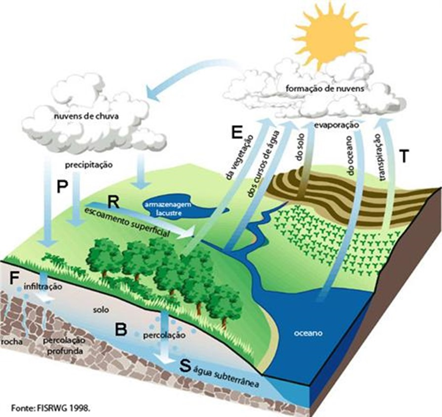

BALANÇO HÍDRICO
Estudo de Viabilidade de Implantação – EVI (Anexo II) de todos os usos dos recursos hídricos superficiais ou subterrâneos do empreendimento a ser outorgado. Apresentar ainda o fluxograma quantitativo com detalhamento de todos os usos e outras fontes (superficiais, subterrâneos ou fornecidos por terceiros, incluindo lançamentos em rede, solo, fossa séptica, poços de remediação e outros), de forma a ser conhecido o balanço hídrico do empreendimento.
| Entidade | Parâmetros | Início | Site | Postos |
|---|---|---|---|---|
| IAC | HM de superfície evapotranspiração | 1889 | www.iac.sp.gov.br | 150 |
| CETESB | Qualidade de água | 1974 | www.cetesb.sp.gov.br | 400 |
| DAEE | Vazões, Chuvas A. Suberrânea | 1886 | www.spaguas.sp.gov.br | 900 |
| ANA | Vazões, Chuvas, Sedimentos, QA | 1920 | www.ana.gov.br | 250 |
| CEMADEN | Chuvas, Níveis | 2012 | www.cemaden.org.br | 700 |
| CPRM | A. Subterrânea | 2029 | www.cprm.gov.br | 17 |
SIBH, Banco de dados, Sistema de Alerta e Rede
Sistemas para estudos hidrologicos, consultas de dados históricos, alertas de chuva e muito mais
Banco de dados hidrológicos BDH - DAEE
Verifique o banco de dados hidrológicos do DAEE. Estamos atualmente em fase de verificação de consistência. Caso encontre algum problema, entre em contato através do e-mail: hidrologia@daee.sp.gov.br.
Sistema de Alerta
O SAISP gera a cada cinco minutos boletins sobre as chuvas e suas consequências na cidade de São Paulo.
Rede Hidrológica
Os principais índices climatológicos em várias região do Estado. A Rede Hidrometeorológica do DAEE operou de 1970 a 1995
Chuva Agora
Permite condensar de maneira prática o índice de precipitações ocorridas entre 1 e 72 horas nas 972 estações distribuídas em território paulista.
Sedimentometria
Quantificar as erosões ocorridas nos vários tipos de solo no Estado. Transporte Sólido por Suspensão em Rios Paulistas